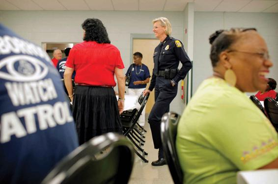

Can We Prevent Crime by Building Stronger Communities?
Preventing crime and reducing fear of crime are both closely related to rebuilding strong communities. As we saw in our earlier discussion of the broken windows theory, one of the most significant discoveries in criminology in recent years is that the decay of day-to-day civility relates directly to criminality. For a long time, attention was focused almost exclusively on serious crime: robbery, assault, and other violent crime. More minor crimes and forms of public disorder, however, tend to have a cumulative effect. When asked to describe their problems, residents of troubled neighborhoods mention abandoned cars, graffiti, prostitution, youth gangs, and similar phenomena.
People act on their anxieties about these issues; they leave the areas in question if they can, buy heavy locks for their doors and bars for their windows, and abandon public places like parks. Fearful citizens stay off the streets, avoid certain neighborhoods, and curtail their normal activities and associations. As they withdraw physically, they also withdraw from roles of mutual support for fellow citizens, thereby relinquishing the social controls that formerly helped maintain civility within the community.
Community Policing
One popular idea to combat this development is to have police work closely with citizens to improve local community standards and civil behavior, using education, persuasion, and counseling instead of incarceration. Community policing implies not only involving citizens but also changing the outlook of police forces. A renewed emphasis on crime prevention rather than law enforcement can support a reintegration of policing with the community and reduce the siege mentality that develops when police have little regular contact with ordinary citizens.
To be effective, partnerships among government agencies, the criminal justice system, local associations, and community organizations have to include all economic and ethnic groups (Kelling and Coles, 1997). Government and business can act together to repair urban decay. One model is the creation of urban enterprise zones, which provide tax breaks for corporations that participate in strategic planning and invest in designated areas. To be successful, such schemes demand a long-term commitment to social objectives.
Emphasizing these strategies does not mean denying the links among unemployment, poverty, and crime. Rather, when coordinated with community-based approaches to crime prevention, these approaches can contribute directly and indirectly to furthering social justice. Where social order has decayed along with public services, other opportunities, such as new jobs, decline also. Improving the quality of life in a neighborhood by providing job opportunities and public services can lead to a revival of such areas.
Shaming as Punishment
The current emphasis on imprisonment as a means of deterring crime can cripple the social ties within certain communities. In recent years, shaming—a form of punishment that maintains the offender’s ties to the community—has grown in popularity as an alternative to incarceration. Some criminologists see the fear of being shamed within one’s community as an important deterrent to crime. As a result, the public’s formal disapproval could deter crime as effectively as incarceration, without the high costs of building and maintaining prisons.
Criminologist John Braithwaite (1996) has suggested that shaming practices can take two forms: “reintegrative shaming” and “stigmatizing shaming.” Stigmatizing shaming is related to labeling theory, discussed earlier, by which a criminal is labeled as a threat to society and is treated as an outcast. The labeling process and society’s efforts to marginalize the individual reinforce that person’s criminal conduct, perhaps leading to future criminal behavior and higher crime rates.
Former Tampa police chief Jane Castor greets community members during the National Night Out, an initiative that fosters citizen involvement in crime prevention.
The very different practice of reintegrative shaming works as follows: People central to the criminal’s immediate community—such as family members, employers and coworkers, and friends—are brought into court to state their condemnation of the offender’s behavior. At the same time, these people must accept responsibility for reintegrating the offender back into the community. The goal is to rebuild the individual’s social bonds to the community as a means of deterring future criminal conduct.
Japan, with one of the lowest crime rates in the world, has successfully implemented this approach. The process is based on a voluntary network of more than 500,000 local crime-prevention associations dedicated to facilitating reintegration into the community and on a criminal justice system that attempts to be lenient for this purpose. As a result, in Japan, only 5 percent of convicted individuals serve time in prison, compared with 30 percent in the United States. Reintegrative shaming is already a familiar practice in American social institutions such as the family. When a child misbehaves, the parent may express disapproval and try to make the child feel ashamed of her conduct but, at the same time, reassure her that she is a loved member of the family.
Could reintegrative shaming succeed in the U.S. criminal justice system? In spite of the beliefs that these tactics are “soft” on crime, that Americans are too individualistic to participate in community-based policing, and that high-crime areas are less community oriented, community networks have successfully worked with the police in preventing crime. These social bonds could also be fostered to increase the power of shame and to reintegrate offenders into local networks of community involvement.
CONCEPT CHECKS
Name three explanations for declining crime rates in the United States.
According to Victor Rios, why are policies like stop and frisk problematic?
What are police officers’ primary tasks each day?
What are two specific ways by which community members can combat local crime?